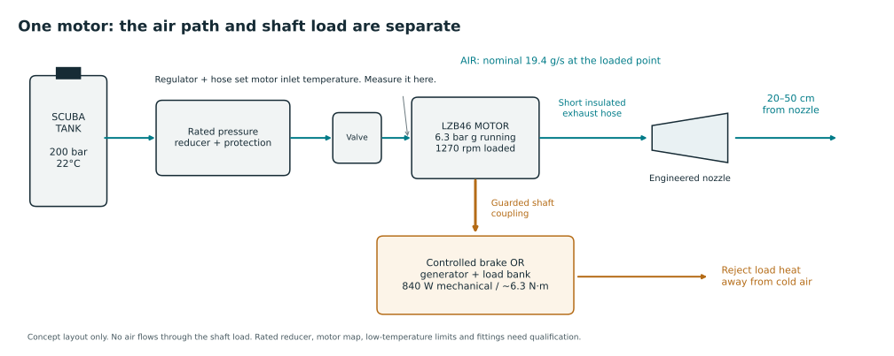

3D · ΔT ≥6°C
Cyan ≤24°C · Grey outlets · Amber section. Drag to rotate.
Assumed cylinder: 12 L / 200 bar gauge / 30°C · planning cutoff: 20 bar
Air inventory supports short tests. Direct tank-to-motor connection is incompatible. Motor running target is 6.3 bar g. The product page lists 7 bar g maximum; the manual says 6.3 bar or nameplate. Confirm the unit limit. The stock pressure-reduction package needs proven full-flow delivery and downstream overpressure protection.
Runtime range: adiabatic / isothermal real-air scenarios, not guaranteed operating time. Tank cooling, regulator droop/icing and motor temperature limits may stop delivery earlier. Each 10 s pulse consumes 194 g. Pauses change tank heat transfer.
| Motors | Total g/s | Free air L/min | External shaft load W | Spray time s | Full 10 s pulses |
|---|---|---|---|---|---|
| 1 | 19.4 | 972 | 840 | 105–123 | 10–12 |
| 2 | 38.8 | 1944 | 1680 | 52–62 | 5–6 |
| 3 | 58.2 | 2916 | 2520 | 35–41 | 3–4 |
| 4 | 77.6 | 3888 | 3360 | 26–31 | 2–3 |
All rows use the same tank and cutoff. Several motor exhausts can feed one nozzle in principle; only the one-motor 19.4 g/s cases below were newly simulated. One motor is not rated to give 77 g/s at the listed loaded point. Regulator/manifold capacity is unqualified.
Initial real-air inventory: 2.678 kg. Usable to 20 bar: 2.028–2.386 kg. Use absolute pressure in the EOS.
At 30°C motor inlet: 30 − 840/(0.0194 × 1006) = −13.04°C exhaust. Assumed cold path UA=10.0737 W/K warms this to 4.31°C. At 40°C motor inlet, the same model gives 10.28°C at the nozzle. Source budgets: 501 W / 385 W. The earlier 0.96°C source belonged to four motors and is not reused here.
UA reuses the full earlier four-motor-path conductance for one path; it is an assumption, not a measured conservative guarantee. Shaft heat returns outside the cold stream. Fixed motor power/flow is a catalogue-point hypothesis, not a coupled motor/regulator map. The regulator throttles most of the pressure ratio. The LZB46 does not expand directly from 200 bar. The real-air isenthalpic regulator calculation can cool air initially; wall heat and falling tank state change it. No fixed Joule–Thomson cooling credit is included in the CFD source.
A free-spinning motor does not supply the assumed 840 W load. A sustained external load needs about 6.32 Nm at 1270 rpm. The cylinder already is the warm-side buffer. No extra cold receiver is selected; it adds wall heat, cooldown delay and exhaust backpressure.
Checked 24 Oct 2026 · Dubai / Ankara / San Francisco · calculations only; saved CFD is unchanged
First choice to seek: Gast 2AM-NCC-16 for a contained bench POC. Try the ~200 W lower-duty point if its load fixture is easier to obtain. It uses less air than the original motor. It is not predicted to beat LZB46's motor temperature drop. No alternative's immediate delivery is confirmed.
| Motor / operating point | Shaft W | g/s | Motor ΔT K | Nozzle °C old UA / short UA | Tank spray s | US list USD |
|---|---|---|---|---|---|---|
| Atlas LZB46-RL-A025-11 | 840 | 19.4 | 43 | -0.5 / -18.5 | 108–127 | — |
| Gast 1AM-NRV-39A | 270 | 8.9 | 30 | 17.6 / -4.2 | 235–278 | $256.99 |
| Gast 2AM-NCC-16 | 600 | 15.6 | 38 | 5.7 / -13.4 | 134–158 | $313.99 |
| Gast 2AM-NCC-16 · low-duty POC | 200 | 8.4 | 24 | 20.4 / 1.9 | 249–294 | $313.99 |
| Gast 4AM-NRV-50C | 1100 | 36.6 | 30 | 1.2 / -6.9 | 57–67 | $477.99 |
22°C assumed at the motor inlet, 30°C ambient. Gast values are approximate paired curve reads: interpolate 7/5.6 bar to 6.3 bar at the same speed; low-duty 2AM uses 5.6 bar / 1000 rpm. Free-air density assumed 1.2 kg/m³. Nozzle columns use UA=10.0737 / 1 W/K; neither conductance is a motor guarantee. Tank: 12 L / 200 bar / 22°C to 20 bar; adiabatic/isothermal inventory-only scenarios. No startup conditioning budget deducted.
Gast points can support a bench POC under the stated assumptions. No new motor is validated at 20–50 cm. Sustained shaft load is required.
| Motor | Cold budget W | Max mixed g/s at 6 K | Ambient / source mass |
|---|---|---|---|
| Atlas LZB46-RL-A025-11 | 946 | 157 | 7.1 |
| Gast 1AM-NRV-39A | 305 | 51 | 4.7 |
| Gast 2AM-NCC-16 | 681 | 113 | 6.2 |
| Gast 2AM-NCC-16 · low-duty POC | 238 | 39 | 3.7 |
| Gast 4AM-NRV-50C | 1357 | 225 | 5.1 |
Table: 22°C motor inlet, 30°C ambient, UA=1 W/K, zero motor heat pickup. Includes the inlet's existing 8 K temperature deficit. Ideal mixing ceilings, not achieved volumes or CFD. JSON includes inherited UA and 25% heat-return scenarios. Startup metal heat can erase early cooling.
GLOBE V1: 520 W listed; paired airflow is missing. Hypothetical 10 / 20 / 30 / 40 g/s would give 52 / 26 / 17 / 13 K motor drop at 520 W with zero heat pickup. These are sensitivity examples, not V1 predictions.
Calculation / assumptions · 20 balance checksChecked 28 Oct 2026. Search for continuous rotary pneumatic motors at about 5.5–6.3 bar running pressure. Practical band: 10–20 g/s with matched loaded shaft power of about 0.3–0.8 kW. This is a design starting point, not proof of the 20–50 cm target.
| g/s | Free L/min | Shaft W for 20–30 K motor drop |
|---|---|---|
| 10 | 500 | 268–402 |
| 15 | 750 | 402–604 |
| 20 | 1000 | 537–805 |
Table assumes cp=1006 J/kg K and heat pickup equal to 25% of shaft power. Air conversion uses assumed 1.2 kg/m³ free-air density. Prefer the upper drop band for warm motor inlet. A nozzle mixing/path screen is in the JSON; it assumes UA=1 W/K and 25% temperature-deficit retention. Neither is verified.
No qualified bare motor under $100 found. Both Turkish listings show enabled cart controls. Shaft power is missing. Listed air use is 141/113 L/min; if continuous free air, that is only 2.82/2.26 g/s. Exhaust collection and lubrication are unresolved. Do not buy these expecting the outdoor target to be established.
UAE and Turkey supply routes exist. Immediate stock remains unresolved; neither market is ruled out.
Exact-model US listings and prices observed. Stock, ship-from location and arrival date not confirmed. ZIP/shipping widget unavailable in this session.
Manufacturer-listed Turkish distributor and Istanbul contact verified. No Ankara stock, inventory count or dispatch date published.
Supplier site explicitly offers Gast air motors; Al Quoz Dubai address and enquiry@goodwinllc.com verified. Exact model, local stock and dispatch unconfirmed. Supplier claim, not verified manufacturer authorization.
Dubai supplier lists GLOBE vane motors. V1 page lists 0.52 kW maximum power. Stock, price, dispatch and paired power/airflow curve unconfirmed. Not yet thermally ranked.
Zoro product descriptions such as “Stock 40/Skid” are not live inventory. Prices and catalogue pages do not establish ready-to-ship stock. 4AM-NRV-50CLL is marked discontinued in Zoro's listing; no matched oil-free curve/stock is qualified. 2AM-NCC-96 has conflicting retailer power fields and is excluded.
The standard Gast models above need lubrication. LL/NLP models have different pressure limits (manual: 5.5 bar), so they require separate curves and calculations. New cold-air temperatures are first-law scenarios; no new spatial CFD or 20–50 cm result is claimed.
Heat into the motor is zero in the nominal calculation. JSON includes a 25% shaft-heat-return scenario and ±10% power/flow sensitivity. These are assumptions, not error bounds. At startup, motor/fixture thermal storage must be included.
The load acts on the rotating shaft, not as a valve in the exhaust. Added load lowers speed and changes airflow. Our 19.4 g/s is already the loaded 840 W / 1270 rpm catalogue-point conversion. Free-running speed is about 2400 rpm; unloaded flow and exhaust temperature are not established here. Excess load can stall the motor and eliminate shaft power.

If air entering the motor is 22°C: conditional exhaust = -21.04°C. The same assumed path UA and 30°C ambient give -0.46°C at the nozzle. This is a calculation, not a measured guarantee.
22°C in the tank does not fix motor inlet temperature. At initial 200 bar, an ideal heat-free real-air throttle to 6.3 bar gives -11.81°C before hose warming. Do not apply the fixed motor power/flow pair to this subzero state without a motor map/test. Tank pressure and temperature also change during discharge.
With no external load, external shaft work tends to zero after spin-up. The model’s sustained 840 W extraction disappears. Regulator cooling, casing heat transfer and local static-temperature effects can remain; no exact unloaded temperature or g/s is claimed. The manufacturer's manual notes high no-load housing hotspots; this is not an exhaust-temperature rating.
Saved CFD below remains at 4.31°C / 10.28°C sources. No −0.46°C-source CFD was generated.
19.4 g/s · 1 loaded motor · 1 nozzle · 30°C ambient · still air · gravity · 10 s ON
Cyan ≤24°C · Grey outlets · Amber section. Drag to rotate.
Best sampled 5 × 5 cm mean · air temperature
Reference sectionsResident air ≥6°C below ambient within the target bands. The marker follows the time slider. No post-shutoff cooling duration is simulated.
Matching nozzle STL · mm STEP · Unfitted 100 mm cold-hose interface; not pressure-rated tank hardware.
CAD exit dimensions match the CFD. The 100 mm inlet is an unfitted prototype interface. Internal nozzle flow, mounting, manifold balance, motor performance and human comfort remain unvalidated.
| Saved scenario | Cells | 20 cm best 5 cm ΔT K | 50 cm best 5 cm ΔT K | 20–50 cm cold air L | Cold air g |
|---|---|---|---|---|---|
| Nominal inlet 30°C · nozzle 4.31°C · coarse | 37,955 | 19.97 | 15.42 | 10.68 | 13.02 |
| Nominal inlet 30°C · nozzle 4.31°C · fine | 103,572 | 19.93 | 15.40 | 9.52 | 11.64 |
| Warm inlet 40°C · nozzle 10.28°C · coarse | 37,955 | 15.56 | 12.76 | 8.95 | 10.83 |
Cold air = native cells ≥6 K below ambient. Best sampled 5 × 5 cm means are local patches, not whole-section or human cooling. Native frames at integer seconds 0–10; no post-shutoff decay. Fixed source boundary; tank transient is not coupled to CFD.
Result CSV · CFD / mesh checks